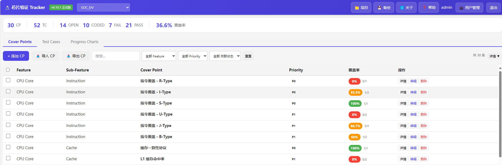
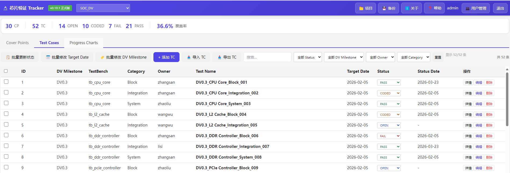
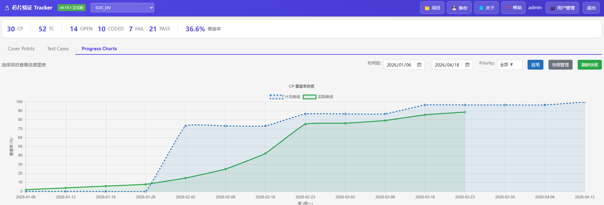

一站式管理 Cover Points 与 Test Cases
加载中...集中管理 SOC_DV 项目中的 30 个覆盖点，通过直观的进度条展示每个 CP 的验证状态，支持按 Feature、Priority 和关联状态过滤。


高效管理 52 个测试用例，支持批量操作和多维度筛选。颜色标签直观区分 PASS/FAIL/CODED/OPEN 状态，助力验证进度一目了然。
实时追踪验证进度，图表化展示计划曲线与实际覆盖率的对比。按时间维度分析项目健康度，及时发现进度偏差。

| Feature | Sub-Feature | Cover Point | Priority | 覆盖率 | 操作 |
|---|
| ID | DV Milestone | TestBench | Category | Owner | Test Name | Target Date | Status | Status Date | 操作 |
|---|
请选择一个项目查看进度图表
提示：需要为项目设置起止日期
暂无 Functional Coverage 数据
点击"导入 FC"按钮导入数据
首次登录必须修改密码
将选中的 Test Cases 状态更新为：
⚠️ REMOVED 状态的 TC 将清除与 Cover Points 的关联
为选中的 Test Cases 设置 Target Date：
为选中的 Test Cases 设置 DV Milestone：
为选中的 Cover Points 设置 Priority：
v0.0.0
正式版
发布日期: -
支持格式: .xlsx, .csv
预览数据:
当前项目:
记录数量: 0